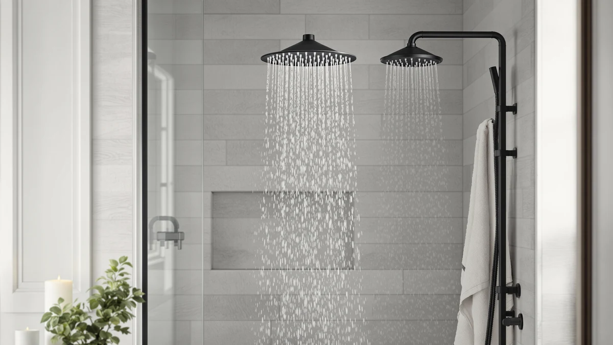

Best Shower Head Gpm Explained (2026) | Best Shower Heads
Prices and picks verified as of September 2026. Independent, reader-supported reviews.


Things to Know Before You Buy
- GPM means gallons per minute. It measures flow volume, not pressure. A 2.5 GPM head moves 2.5 gallons of water in 60 seconds at the standard 80 PSI test pressure.
- Federal law caps new shower heads at 2.5 GPM, a limit in place since 1994. Several states go lower: California allows 1.8 GPM, and Colorado, New York, and Washington cap models at 2.0 GPM or less.
- WaterSense-labeled heads use 2.0 GPM or less and must pass EPA spray-force tests, so the label filters out weak performers among the low-flow options.
- An 8-minute shower at 2.5 GPM uses 20 gallons. Drop to 1.8 GPM and the same shower uses 14.4 gallons, which saves a daily showerer roughly 2,000 gallons a year.
- You can test your current flow in 10 seconds with a bucket and a timer. You don't need tools or a plumber.
You want shower head GPM explained without the plumbing jargon, so here is the short version: GPM stands for gallons per minute, and it tells you how much water your shower head delivers when the valve is wide open. That single number decides how your shower feels and what your water bill looks like. It also determines whether the head you ordered online is even legal to install in your state.
The number matters more than most shoppers expect. Since 1994, federal law has capped shower heads at 2.5 GPM, and states like California have pushed that down to 1.8 GPM. Manufacturers hit those targets in different ways, and the engineering behind the restrictor makes the difference between a low-flow head that feels like a firm rainstorm and one that feels like a sad drizzle.
I have swapped and flow-checked dozens of shower heads across the guides on this site, and GPM confusion drives more bad purchases than any spec on the box. This guide covers what the ratings mean, how the categories break down, how to pick the right number for your bathroom, and the mistakes that lead people to blame a good shower head for a plumbing problem.
What You Need to Know
Start with the distinction that trips up most buyers: GPM measures volume, PSI measures pressure. Your home's water pressure, usually between 40 and 80 PSI, comes from your municipal supply or well pump. The shower head GPM rating tells you how much of that water gets through the nozzle per minute. A high-pressure home with a 1.8 GPM head produces a sharp, forceful spray. A low-pressure home with a 2.5 GPM head can still feel weak.
Manufacturers rate GPM at 80 PSI under a federal test standard, so the number on the box represents a best case. If your home sits at 45 PSI, your actual flow runs lower than the rating. That gap explains why two people can buy the same shower head and report opposite experiences.
The law sets your ceiling. The federal Energy Policy Act limits shower heads to 2.5 GPM, and no compliant retailer sells above that for residential use. California enforces 1.8 GPM, while Colorado, Hawaii, New York, Vermont, and Washington sit at 2.0 GPM or lower. Amazon listings rarely flag state restrictions, so a Texas-spec head can arrive at a California address without a warning.
One more baseline before you shop: measure what you have. Run your current shower into a bucket for 10 seconds, measure the water, and multiply by six. That number, compared against the rating stamped on the head's rim, tells you whether your plumbing delivers full flow or whether scale and pressure problems are throttling it.
Types and Categories
Shower head GPM ratings cluster into four tiers, and each tier serves a different household.
2.5 GPM, the federal maximum. These deliver the most water the law allows and suit homes with weak pressure, big rain heads, or people who rinse thick hair daily. Most older Moen and Delta fixed heads live here.
2.0 GPM, the WaterSense tier. Heads at 2.0 GPM or below can carry the EPA WaterSense label, which requires passing spray-force and coverage tests. This tier gives up about 20 percent of the water while keeping a spray most people cannot distinguish from full flow. It has become the default for new construction in several states.
1.75 to 1.8 GPM, the California tier. Manufacturers build these to satisfy the strictest state codes. The good ones compensate with smaller nozzles and pressurized spray chambers; Delta's H2Okinetic line, for example, chops the water into larger droplets at higher velocity so 1.75 GPM feels denser than the number suggests.
1.5 GPM and below, the ultra-low tier. These target conservation-first buyers, RVs, boats, and homes on small septic or tankless systems. Expect a real tradeoff: rinse times grow, and wide rain-style faces feel misty at this flow.
Head style interacts with the rating. A 4-inch handheld concentrates 1.8 GPM into a strong stream, while a 12-inch rain head spreads the same flow across nine times the area. Dual-head models like Delta's In2ition split one GPM budget between two sprayers, so both run softer when used together.
How to Choose
Pick your shower head GPM by working through four questions in order.
First, what does your state allow? Check your state's plumbing code before comparing models. If you live in California, the state already made the 1.8 GPM decision for you, and shopping the 2.5 GPM tier wastes your time. Retail listings often ship non-compliant models across state lines, so the burden falls on you.
Second, what is your water pressure? Test it with a $10 gauge on an outdoor spigot or run the bucket test described above. Above 60 PSI, a 1.8 or 2.0 GPM head will feel strong and you should take the water savings. Between 40 and 60 PSI, stay at 2.0 to 2.5 GPM. Below 40 PSI, choose the highest legal flow plus a pressure-focused design, and read our guide to shower heads for low water pressure before spending anything.
Third, what style of head do you want? Standard fixed heads and handhelds perform well at any legal GPM. Rain heads over 8 inches want the full 2.5 GPM to avoid feeling thin, and dual-head systems need smart engineering to split flow without disappointing you.
Fourth, run the cost math. Moving one daily 8-minute shower from 2.5 to 1.8 GPM saves about 2,000 gallons a year. With water and sewer rates near $12 per 1,000 gallons in many US cities, plus the energy to heat that water, a household of three can bank $100 to $150 a year. A $40 low-flow head pays for itself within months, and the savings compound with each person in the house.
Weigh those four answers together and the choice usually collapses to one or two tiers. Comfort seekers with good pressure land at 2.0 GPM; conservation-minded households land at 1.8 or lower.
Common Mistakes to Avoid
Buying GPM to fix a pressure problem. A weak shower usually points to low supply pressure, a half-clogged mixing valve, or scale in the head, and a 2.5 GPM replacement fixes none of those. Run the bucket test first. If your current 2.5 GPM head flows at 1.5, the shower head GPM rating was not your problem.
Ripping out the flow restrictor on day one. The restrictor keeps the head legal and keeps the spray pattern engineered as designed. Removing it can push a 1.8 GPM head past 3 GPM, void the warranty, violate your plumbing code, and turn a sculpted spray into an uneven gush. If you want more flow, buy a 2.5 GPM model where the law allows it.
Pairing a huge rain head with a strict flow limit. A 12-inch rain head at 1.8 GPM spreads a bathtub faucet's worth of restriction across a dinner plate. Shoppers in strict-code states should size down to 8 inches or pick a pressurized low-flow design instead.
Ignoring your water heater. A 2.5 GPM head drains a 40-gallon tank in about 20 minutes of mixed hot water. Households that run out of hot water mid-shower often need a lower GPM, not a bigger heater.
Trusting the box over the bathroom. The printed rating assumes 80 PSI. Measure your own flow after installation, because a rating you never receive is a rating you should not have paid for.
Care and Maintenance
Your shower head GPM degrades over time even though the rating never changes. Mineral scale builds inside the nozzles and the restrictor, and hard-water homes can lose a third of their flow within a year or two. A few minutes of cleaning prevents most of that loss.
Descale twice a year. Fill a plastic bag with white vinegar, secure it over the head with a rubber band so the nozzles sit submerged, and leave it for two to four hours. Metal finishes like oil-rubbed bronze tolerate 30 minutes at most before the vinegar dulls them. Rub the silicone nozzles with your thumb afterward to break loose the softened scale.
Clean the inlet screen annually. Unscrew the head from the shower arm and you will find a small mesh filter in the connector. Grit and pipe debris collect there and choke flow before the water even reaches the nozzles. Rinse it, re-wrap the arm threads with plumber's tape, and hand-tighten the head back on.
Re-test your flow once a year. The 10-second bucket test takes less time than reading this paragraph. A 2.0 GPM head flowing at 1.4 has told you it needs a descale; a head that stays low after cleaning has an internal blockage or a failing restrictor, and most restrictors cost a few dollars to replace.
Filtered models add one task: swap the cartridge on schedule, usually every six months, because a spent filter restricts flow long before it stops removing chlorine.
Our Top Picks
You do not need a product to understand GPM, but three of the models we have compared across this site pair well with the advice above: a cheap way to adjust the flow rate you already have, a value combo that performs at code-compliant flow, and a dual head that manages a shared GPM budget better than most.

Editor’s Pick
4 Pcs Shower Head Flow
This four-piece flow regulator set lets you lower your existing head's GPM for less than $6, the cheapest possible experiment before committing to a new low-flow model.
$5.49
Check Price on Amazon
Best Value
INAVAMZ Shower Head with Handheld
A fixed-plus-handheld combo that keeps a firm spray at code-compliant flow, so you stay legal without settling for a weaker shower.
$39.99
Check Price on Amazon
Premium Choice
Delta 6-Setting In2ition 2-in-1 Dual
Delta's In2ition splits one flow budget between a fixed head and a docked handheld, and its H2Okinetic spray keeps both feeling dense at restricted GPM.
$75.53
Check Price on AmazonWhat does GPM mean on a shower head?
GPM stands for gallons per minute, the volume of water a shower head delivers at a standard test pressure of 80 PSI.
Is 1.8 GPM enough for a good shower?
Yes, for most people.
Frequently Asked Questions
What does GPM mean on a shower head?
GPM stands for gallons per minute, the volume of water a shower head delivers at a standard test pressure of 80 PSI. Federal law caps new shower heads at 2.5 GPM, and most models sold today run between 1.5 and 2.5 GPM. You can find the rating stamped on the shower head rim or printed on the packaging.
Is 1.8 GPM enough for a good shower?
Yes, for most people. A well-designed 1.8 GPM head with air-injection or pressurized spray channels feels close to a 2.5 GPM model while using 28 percent less water. The exceptions are large rain heads, which spread that flow across a wide face and can feel weak, and homes with water pressure below 40 PSI.
How do I measure my shower head GPM at home?
Run the shower at full hot-and-cold blast into a bucket for exactly 10 seconds, measure the water collected, and multiply by six. A gallon in 10 seconds equals 6 GPM; a third of a gallon equals 2 GPM. Test with a marked one-gallon jug or measuring pitcher for reasonable accuracy.
Can I remove the flow restrictor from my shower head?
Physically, yes, most restrictors pry out with needle-nose pliers. Legally and practically, we advise against it. Federal and state codes require the restrictor, removal voids most warranties, and the unrestricted spray pattern often turns uneven because the head was engineered around the restricted flow. Buy a higher-GPM model instead where your state allows one.
Does a higher GPM shower head increase water pressure?
No. Pressure comes from your plumbing, and GPM only controls how much water passes through at that pressure. If your shower feels weak at 2.5 GPM, adding flow will not help; descale the head, clean the inlet screen, and check your home's pressure with a gauge. A pressure below 40 PSI points to a supply or regulator problem, not the shower head.
Verdict
With shower head GPM explained, the decision comes down to three numbers: your state's legal limit, your home's water pressure, and the flow your current head actually delivers. Measure before you shop. The 10-second bucket test costs nothing and tells you whether a new head will change anything at all. If your pressure sits above 60 PSI, a 1.8 or 2.0 GPM WaterSense model gives you a strong shower and $100 or more in annual savings for a typical family. If your pressure runs low, stay at the highest GPM your state allows and put your money into a pressure-focused design. For most readers, the cheapest smart move is the SynHHergyx four-piece flow regulator set from our picks, which lets you trial a lower flow rate on your existing shower head for under $6 before you commit to anything. Test, match the number to your plumbing, and the rating on the box stops being a mystery.